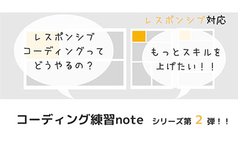
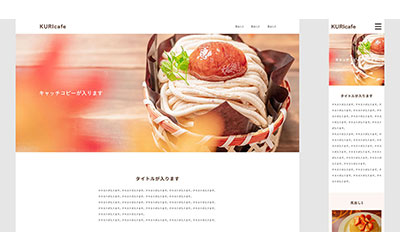
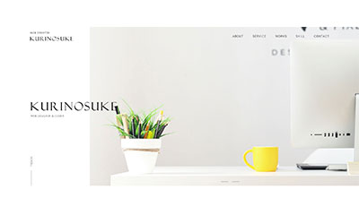
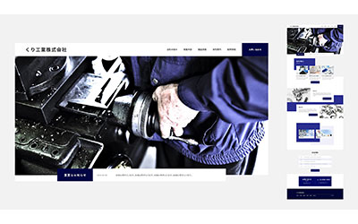

くりnoteについて
-
くりnoteは、これからWEBサイト制作を学びたい方に向けた教材です。
「挫折させない」をコンセプトとして、つまづきそうな箇所には解説を入れたり、初学者に易しい内容となっています。
コーディング練習noteでは、実際によくある汎用性の高いコーポレートサイトを作りますので、ものづくりが好きな人は楽しく学んでいけます。
また、学習ロードマップやデザインカンプなど多数投稿しており、コーディングだけでなく、デザインやディレクション、営業の仕方などWEBクリエイターとして、 総合的に学べる教材となっております。
今後も随時、投稿していく予定です。
くりnoteの強み
- 圧倒的情報量
- お手頃な価格帯
- 実務で一番大事なググる力が身に付く
note一覧
-
コーディング練習note第1弾
模写コーディングをやり始めた途端、手が止まってしまった経験はありませんか。
そんな人にオススメのコーディング練習になります。
実際によくある汎用性の高いコーポレートサイトを下層ページ含めて5ページのコーポレートサイトを作りながら、学んで行きましょう！
①②③④は無料で公開していますので、まずはそちらからやってみてください！！
-
 コーディング練習note第2弾(レスポンシブ対応)
コーディング練習第2弾でレスポンシブ対応です。
ある程度コーディングの仕方が分かってきたのに、レスポンシブ対応にするときにつまずいてしまう方も多いかと思います。 そんな人にオススメです。
フィットネス系のサイトで、斜めのデザインを取り入れていて、作っていて楽しく学んで行けるかと思います。
モダンなコーディングが出来るようになるので、スキルアップ間違いなしです！！
-
WEBクリエイターへの最短ロードマップ
WEBクリエイターを目指しているけど、なにから始めればよいか迷っている人にオススメです。
経験を元に、極力不要な学習は省き、なるべく最短最速ルートでWEBクリエイターを目指せるように、作りました。
ただ、やることは多いので覚悟は必要になります。
とにかく時短にこだわりましたので、WEB制作時に役立つツールなどを豊富に紹介していますので、ロードマップが不要になったあとでも、辞書のように活用もできます。
8万文字でとてもボリューミーな内容となっております。
-
 デザインカンプ【初級編-カフェサイト-】
デザインカンプからのコーディング練習の1弾の初級編になります。
ほぼ実務では、デザインカンプからコーディングをしていくこととなります。
模写コーディングよりも、むしろこちらに慣れておかないと実務で痛い目に合いますので、慣れておいて損はないと思います。
初級なので、レイアウト的にもそこまで難しくはないですが、勉強になるかと思います。
貴重なPSDデータを提供します。デザインの勉強にもなるので、オススメ！
-
 デザインカンプ【中級編-ポートフォリオサイト-】
デザインカンプからのコーディング練習の中級編①です。
コーディングには、慣れてきたけど自分のポートフォリオサイトが無くて困っていませんか。
モダンなデザインのポートフォリオサイトが作れます。コーディングのスキル的にもこれが出来ると結構な実力があると思います。
-
 デザインカンプ【中級編-工業系サイト-】
デザインカンプからのコーディング練習の中級編①です。
工業系のサイトを作っていきます。
ほぼ実案件に近い内容のデザインですので、これが出来て自身のポートフォリオサイトに載せることが出来れば、就職もしくは案件獲得にも大いに繋がる可能性があるので、ぜひチャレンジしてみてください！！
※他にもWEB制作に役立つ無料のnote多数投稿しています。
お買い得noteセット
-
コーディング練習noteセット
コーディング練習note第1弾と第2弾をセットにしました。
それぞれ別々で買うと3100円の所、800円も安くお得です！！
-
WEBクリエイタースターターパック
WEBクリエイターを目指すロードマップとコーディング練習note1弾、2弾をパックにしました。
値段もそれぞれ個別で購入するより1100円も安いのでお得です！
-
WEBクリエイターブースターパック
ロードマップ、コーディング練習note1弾、2弾、デザインカンプをまとめました！
それぞれ個別で購入すると11200円ですが、ブースターパックですと、2300円引きの8900円です！！
-
デザインカンプからのコーディング練習セット
貴重なPSDデータのデザインカンプからのコーディング練習noteをまとめました。 それぞれ個別で買うより、1300円安いです。
今後もコーディング練習素材を提供していきますので、現在のこの値段で買っておいた方が断然お得です！